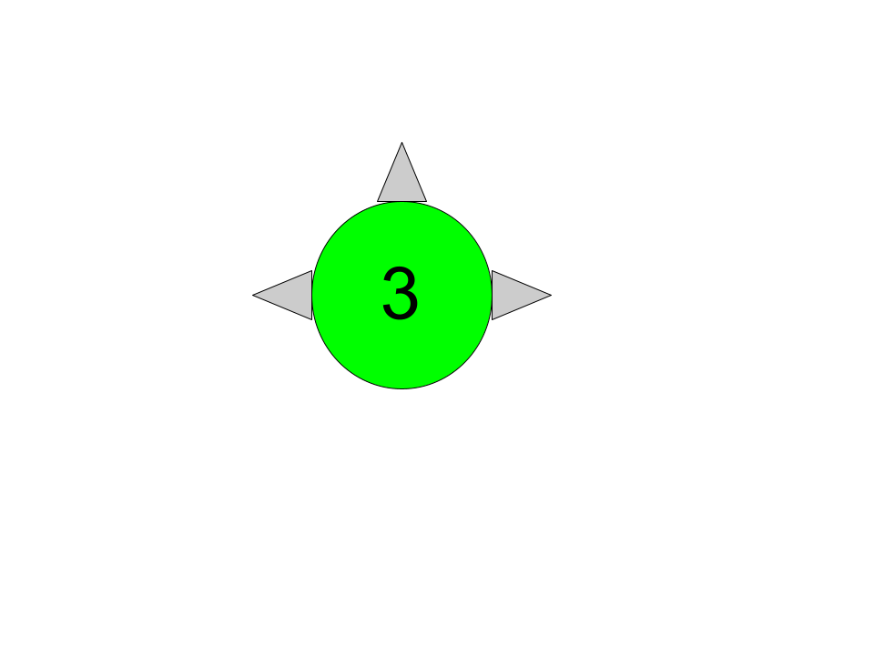

Level 3 The lost city

Level 03 the forth level of this reality is an abandoned city that doesn't seem to decay althougth the buldings have been completly abandoned they still look almost completly intact.
This level has Three different areas:
- The Neighbourhood - It has small streets, white houses with orange roofs made of tiles and some parked cars, the entities present on this area are Entities 2, 6, 8 and 16.
- The Apartements - Like the name says there are apartements made out of white concreate and orange bricks, some larger roads with two lanes and some small shops like bakeries, flower shops and hair salons. The entities present on this area are Entities 2,3,7,8 and 16.
- The City Center - It's the level's main area that contians Skyscrapers, Offices, Hotels, Malls, etc.in here there is also the city hall where Entity 17 ̶L̶i̶v̶e̶s̶ Ĭ̸̭̱̙͍̮̟̟̹̣͕͂̈́̂̂͜s̴̭̱̫̟̻̘̗̃ ̷̞̣̼͚̙́͘͜ͅn̶̩̣̩͖̩̺̼̗͛ǫ̷̧̠͍͔̝̼͔͖͚͕͛̔̈̄͌̂̏͐̿̒͠ț̵̛̜̝͎̖̓̃̔̆̅̀̐͘ ̷̫̳͉̫̫̼͎̹̻͙̦͓̣̯̂̊̇̈̐̌͆̍͆̍͘̚͜r̴̛̮̞̫̫̜̝̬̰͆̈́͐̀̋̌͌̏͝ͅe̸̥̠̝͚̱̣̰̦̠̠̬̙͊̽̀̅̚͜ͅà̴̧̳̳͈̝̈̏́̎̌́͐̉̑̑̇̓͜ĺ̶̝̗͈̭̼̮̻̜̪̙̒̅̐̌̑͌̀̔̾l̶̛̥̬̞̔͆̓̆͊́̐̊͗̑̿͠͝ý̵̢̡̢̭̗͎̗͉̟̮̹̭̤̜͛̌͜ ̶̢̨̰̻͓̰̮̪̬̞̩̝̑Á̶͇̫͙̲̬̱̝̑͌̏͐͒͊̋̑̔̀͋̋́͜L̵̛̬̲̯̰̣͑̂͆̋̓́̌̂̋I̷̢̢̢̡̛̤̼̱͔̹͔̯͚̦͓̍͌̀̒̕͘V̶̧̭͍̫̗̬͇͂̑͠Ȩ̸͙͎̗̩̩̣͇̰̝̦͊̀͊̀̐̅̓̀͒̀͌ͅͅ other entities present on this area are Entities 2,8,11,12 and 16. It's recommended that you follow Entity 12 so you don't become another lost soul in this level.
Entrance: Level 1
Exits: through the dirt path on the neighborhood( level 3a); open a glitchy window in the apartements( levels 3b; 3c); Go to the metro station in the city center( level 3d); ask the guiders where the exit is( levels 3e; 3f; 3g); convince the mayor to send out of the level ( level 0b)
Go back